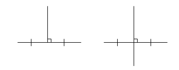

Perpendicular Bisector
Definition: A line which cuts a line segment into two equal parts at 90°.
Try this Drag one of the orange dots at A or B and note the the line AB always
divides the segment PQ into two equal parts. When it is exactly at right angles to PQ it is called the perpendicular bisector.
In general, 'to bisect' something means to cut it into two equal parts. The 'bisector' is the thing doing the cutting.
With a perpendicular bisector, the bisector always crosses the line segment at right angles (90°).
In the figure above, the segment PQ is being cut into two equal lengths (PF and FQ) by the bisector
line AB, and does so at 90°. If AB did not cross at a right angle, it is simply called the bisector of PQ.
Drag the points A or B to see both types.
For obvious reasons, the point F is called the midpoint of the line PQ.
The bisector can either cross the line segment it bisects, or can be a
line segment or
ray that ends
at the line, as shown below.

How to bisect a line segment
Obviously, one way to bisect a line segment is to measure its length, divide that by two and mark the midpoint.
But you can do it without any measurement at all using just a compass and straightedge using techniques
developed thousands of years ago by the Greeks.
For an animated demonstration of how to do this see Constructing the perpendicular bisector of a line segment
Other line topics
(C) 2011 Copyright Math Open Reference.
All rights reserved